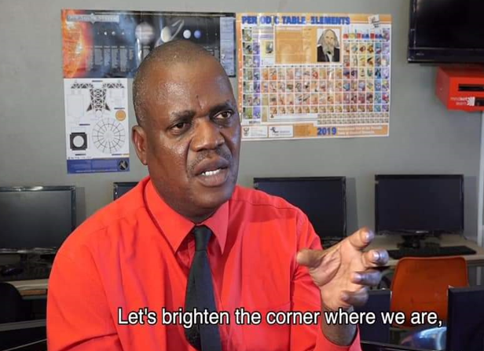
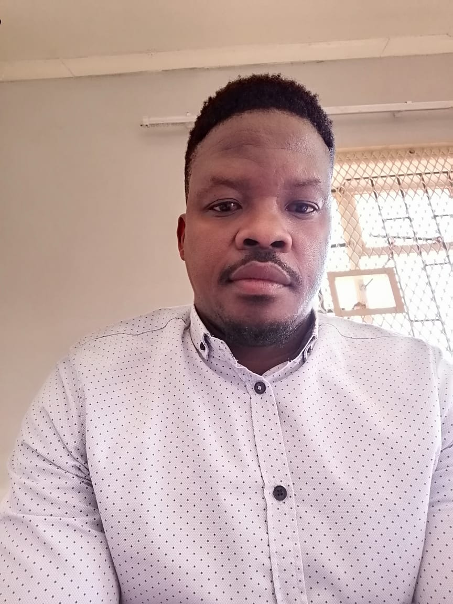

About Bokamoso Science and Technology Education Centre
Bokamoso Science and Technology Education Centre (BOSTEC) is a forward-thinking initiative dedicated to empowering learners through high-quality science and technology education. BOSTEC is the flagship science centre based in Blouberg Municipality under Capricorn District Of Limpopo.The centre was established on the 1st March 1995. Our mission is to bridge the digital divide and cultivate a generation of innovators, problem-solvers, and critical thinkers.
Our Vission
To bridge the Science and Technology gaps in our communities.
Our Values
- Excellence in STEM education — We strive to raise the standard of teaching and learning in mathematics, science, and technology.
- Community empowerment — We extend science services to surrounding communities through outreach and engagement.
- Lifelong learning — We promote continuous growth through career education and exposure to evolving technologies.
- Collaboration and inclusivity — We expand access to science and technology education for disadvantaged learners and educators.
- Structured Thinking — Like a linked list, we build knowledge step-by-step, connecting concepts with clarity and purpose.
- Connectivity — Every learner is a vital node in the chain of progress. We foster meaningful connections between ideas, people, and opportunities.
- Practical Application — We ensure every lesson carries real-world relevance, preparing learners for future careers and challenges.
- Forward ProgressForward Progress — Our programs are designed to move learners forward, one milestone at a time.
- Public Engagement — We actively promote awareness and participation in science, engineering, and technology across all sectors of society.
What We’ve Achieved
Over the past decade, Bokamoso Science and Technology Education Centre (BOSTEC) has made a profound impact on learners, educators, and communities across South Africa. Our commitment to science and technology education is reflected in the milestones we've reached:
- Hosted 170,000 learners through enrichment programmes
- Reached 230,000 learners through outreach programmes
- Organized 456 educational events across the country
Prominent Delegates We've Welcomed
Since our inception, BOSTEC has had the honor of hosting distinguished leaders and advocates for education and technology, including:
- Former Education MEC Mr. Mushwana
- Former Education MEC Mrs. Mashamba
- Former Minister of Science and Technology Dr. Musibudi Mangena
- Former Education MEC Mr. Kgetsepe
- Former Deputy Minister of Science and Technology Mr. Masuhla
- Former Local Mayors Refilwe Kubwana and Seriti Sekgolwana
- Former National Chairperson of NYDA Mr. Sfiso
What’s Next
As we look ahead, Bokamoso Science and Technology Education Centre remains committed to growth, innovation, and impact. Our next chapter is guided by bold goals and strategic focus:
- Improving Occupational Health and Safety Awareness — Ensuring safe learning environments for all participants and staff.
- Enhancing Our Corporate Identity — Strengthening visibility through directional signage, a dedicated website, Google Maps presence, banners, and public posters.
- Advancing Sustainability — Aligning with our 5-year sustainability plan to promote responsible practices and long-term resilience.
- Staying True to Our Strategic Objectives — Upholding our mission and values while adapting to evolving educational needs.
- Expanding Science Education — Reaching more learners, more communities, and more minds with the power of science and technology.
Our Partners
At Bokamoso Science and Technology Education Centre (BOSTEC), collaboration is key to our impact. We are proud to work alongside visionary organizations that share our commitment to education, empowerment, and innovation.
- SAASTA (South African Agency for Science and Technology Advancement) — Supporting science outreach and public engagement.
- Department of Education — Partnering to enhance curriculum delivery and educator development.
- Local Schools — Collaborating to reach learners directly through enrichment and career guidance programmes.
- Nelson Mandela Children’s Fund — Empowering youth through holistic development and educational support.
These partnerships strengthen our mission and expand our reach, helping us build a future where every learner has the tools to thrive.
Challenges We Face
While BOSTEC continues to make strides in science and technology education, we recognize the hurdles that come with our mission — especially in underserved and rural communities. These challenges shape our strategy and fuel our determination:
- Rural Location — Operating in a rural setting presents logistical and infrastructural limitations that affect access and delivery.
- Long-Term Funding — Sustaining our programs and expanding our reach requires consistent financial support and strategic partnerships.
- Post-COVID Recovery — The pandemic disrupted learning and community engagement, and its after-effects continue to impact participation and planning.
- Network Coverage — Limited internet access in some areas hinders digital learning and communication.
- High Competition for Weekend & Recess Programmes — Balancing demand and availability for enrichment sessions remains a challenge, especially during peak periods.
Support Our Mission
At Bokamoso Science and Technology Education Centre (BOSTEC), we believe that every learner deserves access to quality science and technology education — regardless of location or background. But we can't do it alone.
Your support helps us:
- Reach more learners through enrichment and outreach programmes
- Improve infrastructure and digital access in rural communities
- Advance our 5-year sustainability plan
- Deliver hands-on science education and career guidance
- Strengthen our public presence and educational impact
Whether you're a corporate sponsor, individual donor, or community ally — your contribution fuels transformation. Join us in shaping the next generation of scientists, engineers, and innovators.
Our Team
Led by passionate educators and technologists, our team combines academic expertise with real-world experience. We believe in hands-on learning, mentorship, and creating opportunities for every learner to thrive.

Murudu MS
Managing Director

Mr Matlabo MV
Office Administrator